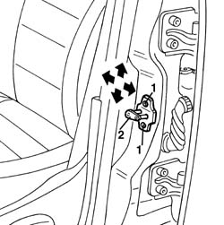

7005A10 front side door - adjust striker and adapt seal in necessary
- Path
- Procedures > 70 FITTINGS > 7005 PASSENGER COMPARTMENT FRONT SIDE DOORS > 7005A front side door assembly > 7005A10 front side door - adjust striker and adapt seal in necessary
- Kind
- repair procedure (removal / refitting; the operation number is the code)
- Applies to
- all engines; all production periods
- Interactive page
- https://sloeber94.github.io/elrnDB-a156/en/#/3238560
Applies to: all engines; all production periods
Before altering the position of the door striker, make sure that the actual door is correctly aligned.
If necessary 7005A14 front side door - adjust centering and moulding - includes adaptation of hinges and seals on door compartment
1. Loosen the striker retaining screws.
2. Move the striker to the correct position, making use of the slotted openings in the bolts.
For the correct adjustment of the striker, it may be necessary to fit suitable shims.
Permitted adjustment movements are indicated by arrows.

Applies to: all engines; all production periods
Tighten the bolts.
Check that the striker and the door lock are correctly matched and check the alignment with the door closed.